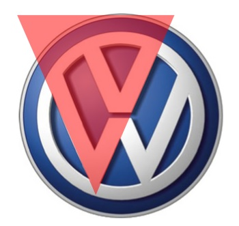
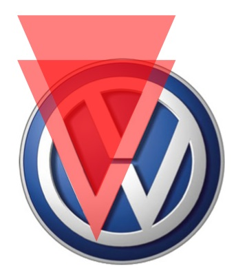
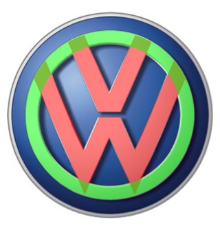
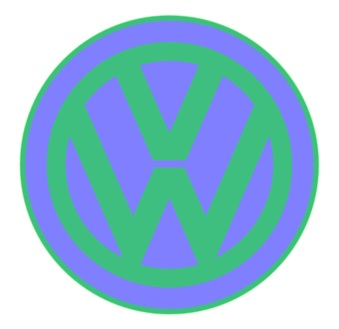
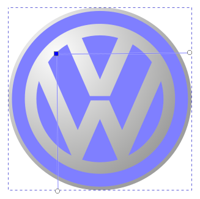
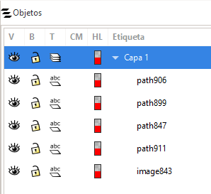
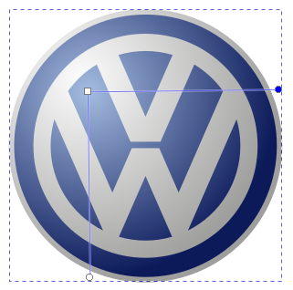
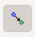

11. Volkswagen logo¶
We open a new document with Inkscape.
We copied the logo above in Inkscape to serve as a model.
We draw an inverted triangle, while holding down the Control key to make sure it's perfectly vertical.
With the selection tool
 we make sure that the triangle matches the logo exactly.
we make sure that the triangle matches the logo exactly.Remember to press the Shift key
 while resizing horizontally so that the shape changes width symmetrically.
while resizing horizontally so that the shape changes width symmetrically.Remember to press the Control key
 while changing the vertical size of the triangle so it doesn't change the angle that the vee makes.
while changing the vertical size of the triangle so it doesn't change the angle that the vee makes.Now we duplicate the logo (Control+D keys) and move it vertically while holding down the Control key to make sure it doesn't move to the sides.
At this point we can subtract one triangle from the other with the
Path... Differencemenu, which brings up one of the two V's in the logo.We duplicate the vee (Control+D keys) and move it horizontally while pressing the Control key so that it does not move vertically.
The position must match the lower logo.

We select the two newly created Vs and unite them into a single path with the
Path... UnionmenuNow we draw a transparent green circle that coincides with the inner circle in which the double V is inscribed.
To cut the drawing we have two options.
We select the V and the circle and in the menu
Object... Crop... Apply.Or we select the double V and the circle and in the menu
Path... Intersection
The small separation between the upper V and the lower W can be done by drawing a rectangle in the appropriate place.
Then we select the double V and the rectangle and in the menu
Path... Difference. We already have the small V separated from the lower W.
Now we are going to draw another circle that coincides with the outer edge of the circle where the letters are inscribed.
We duplicate this circle (Control+D keys) and, holding down the Control and Shift keys to maintain the proportions, make the duplicated circle smaller to the inner edge of the logo circle.
Subtracting the two circles with the
Path... Differencemenu, we have a circumference like the one in the logo.To continue we select the circumference and the letters V and W. In the menu
Object... Align and distributewe center the drawings and unite everything with the menuPath... UnionNow we perform the same previous operation with the outermost circumference of the logo.
We duplicate the inner drawing and join it with the outer circumference in the
Path... Unionmenu.And we can separate this drawing from the logo that serves as a model.
We add a blue circle with the same dimensions as the newly separated drawing and make sure it is correctly centered.
The blue circle should go to the bottom. We choose in the menu
Object... Downso that the blue circle is seen in the background.Now we select the green drawing and change its fill color to a radial gradient with a white center and a gray exterior.
Object... Fill and Stroke...Fill tab... Radial Gradient.Gradient editing tool

To continue we must select the blue circle that is below the drawing that we have just edited. To select the circle we can press several times the tabulation key
 .
.Another option is to choose in the menu the option
Object... Objects...and the following window will appear on the right with all the objects that are currently in Inkscape. In this window we can click on the object that interests us to select it, we can change its name, change the layer object to show and hide the object or lock and release the object.Once the blue circle is selected, we change its fill color to a radial gradient, white in the center and dark blue on the outside.
Now we choose one of the drawings that we had previously duplicated.
We change its color to black with transparency at 75 and blur at 15.
The blur is chosen with the horizontal bar below the fill colors.

Now we can overlay the black image on top of the logo with a bit of offset to the bottom right.
So that Inkscape does not try to match the two drawings it is necessary to temporarily remove the 'Adjust nodes, paths and handles' tool  located in the toolbar on the right.
We move the black shadow drawing down one position with the
Object... Move Down`menu.To finish we are going to draw a circle (pressing Control). We'll change its fill to none and its stroke to dark gray with a 0.4-millimeter-thick stroke style to achieve the circumference of the image.

With the select tool and with the alignment tools we will place the circumference on the outside of the logo.
There are still more adjustments to the gradients and edges of the figures to give it a more three-dimensional feel, but for now we're going to finish the logo.